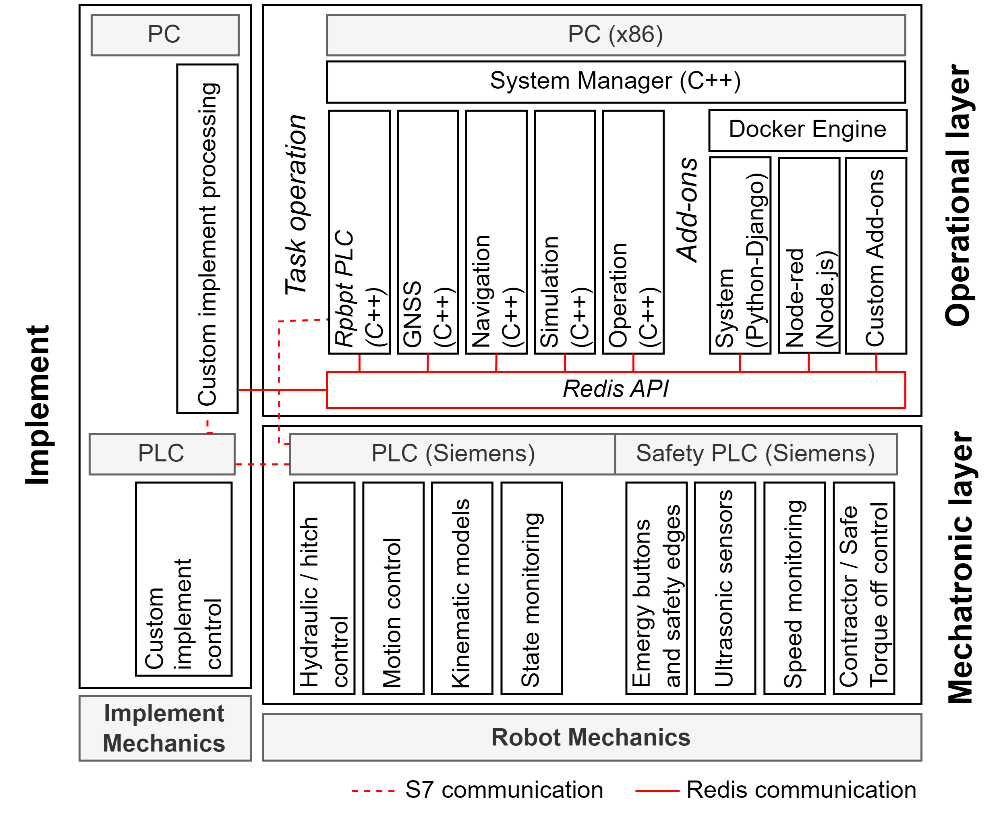

Architecture
Overview
The ARTOF framework is composed out of two layers. The mechatronic layer provides motion control and machine safety and the operational layer enables the autonomous task map execution. The add-ons provide additional functionality, behind the scope of the core functionality. The ARTOF Redis API maintains the communication between the operational layer, the add-ons and other network devices or implements. The framework architecture is shown in the figure below.
{kind=link}
The mechatronic layer is designed to control the hardware components, integrate the inverse and direct kinematic models, interact with the remote controller, enable hitch operation, interface with implements, and interact with the Safety Related Parts of the Control System (SRP/CS). Its integration of the machine safety state diagram ensures a secure operation. The layer can be implemented in different technologies. At ILVO Siemens® technology is used, providing the required flexibility and industrial graded performance.
The operational layer provides the real-time autonomous task map execution based on GNSS navigation. The processes of the operational layer run on a computer and are implemented in CPlusPlus (C++).
The add-ons provide additional functionality. Add-ons are configured in Docker® containers. The system is shipped by default with
the system add-on that provides a web app for user interaction, and
the node-red add-on that provides flow programming functionality, used for logging and implement interaction.
Communication
ARTOF Redis interface
The in-memory database Redis® was selected to perform the interprocess communication between the real-time processes in the operational layer and inter-network communication between other implements or remote operators.
Mechatronic-operational layer interface
The Siemens S7-communication protocol (Snap7) is currently the only supported mechatronic-operational layer interface communication protocol.
This interface functionality is implemented in the C++ class RobotPlc. This class also enables the implementation of other interfaces, depending on the technology used in the mechatronic layer.
The PLC maintains a higherLevelMonitor and higherLevelControl data block.
The content of these data blocks is read and written at every program cycle of the RobotPlc process.
You can find more information on the mechatronic-operational layer interface in Basic concepts (Interfaces).
Note
When using a Siemens® PLC, the checkbox Permit Access with PUT/GET Communication from Remote Partner need to be set.
This is described in the Siemens documentation.